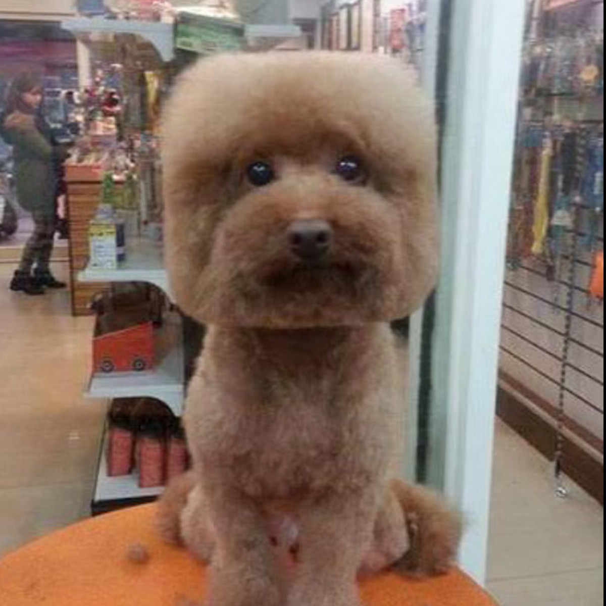

Here's a picture of the cutest doggo. This website has some subtext that goes here under the main title. It's a smaller font and the color is lower contrast
Some random information.

In a frame so neat and true. A square picture caught my view. A dog within, its fur a square. A unique sight beyond compare.
Upon the wall, a square delight. A dog's portrait, a curious sight. Its fur arranged in shapes so rare. A square mosaic, beyond compare.
A picture hangs upon the wall. A dog with fur, a square's call. Its face adorned in angles neat. A square's embrace, a lovely feat.
Behold the frame upon the shelf. A dog's square fur, a piece of self. Geometry meets canine grace. In this square picture's warm embrace.
"You're under no obligation to be the same person you were five minutes ago"
-Alan Watts, Writer, Philosopher
Call to action! It's time!
Sign up for our product by clicking that button right over there!